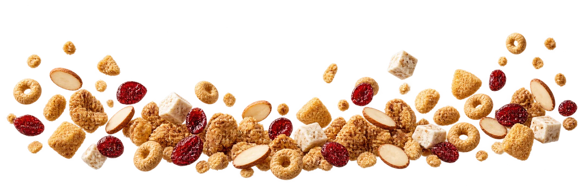

Wyndi’s Yogurt – Yogurt Ramah Lambung
since 2016

Crafted
with
Care
Yogurt
Ramah
Lambung
Halo!
About Us
Crafted with care since 2016, Wyndi’s Yogurt delivers arich, creamy texture and a naturally refreshing tastethat actively supports your digestive health. Ourtraditional fermentation process is nurtured entirely byhand to cultivate pure, wholesome flavor. We rely onzero artificial preservatives and never use citric acid,bringing you nothing but authentic, gut-friendlygoodness.
Our Products
Ice Cream Yogurt
With Additional
Toppings:
Crumbles, granola, almond slices, craisins, nougat, oat ring
Scooped perfectly into a clear bowl and easily paired with wholesometoppings like oats and fruit, our newest sensation offers the indulgentexperience of a frozen dessert. Loved by children and teenagers, itprovides a deliciously creamy, guilt-free treat with all the digestivebenefits of our authentic yogurt.
Greek Style Yogurt
Variants:
Plain, Strawberry, Blueberry, Kiwi, Mango, Pineapple, Orange
Strained multiple times to achieve exceptional purity and a luxuriouslythick, dense texture, this is our most premium artisanal offering.Packaged in a wide tub that highlights its rich consistency, it delivers ahighly concentrated bite of our pure, manually fermented goodness.Enjoy it in our wholesome plain variant, or perfectly swirled with premiumfruit jams—delivering the vibrant sweetness of our blends.
Regular Yogurt Drink
Variants:
Plain, Strawberry, Lychee, Soursop, Melon, Kiwi, Avocado, Mango,Orange, Lemon
Enjoy the classic, refreshing taste of our traditional yogurt in a convenientgrab-and-go bottle. Available in a wide variety of taste options showcasedin brightly colored bottles, this smooth, drinkable treat delivers our signaturegut-friendly goodness on the move.
Yogurt Blend
Variants:
Strawberry, Blueberry, Kiwi, Mango, Pineapple, Orange
Elevate your daily refreshment with our vibrant Yogurt Blend, featuring ourcreamy yogurt beautifully mixed with premium fruit jam. Packed withdelightful bites of nata de coco, this rich combination perfectly balancesauthentic handcrafted flavor with fun, satisfying textures.